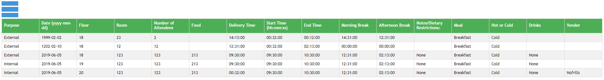
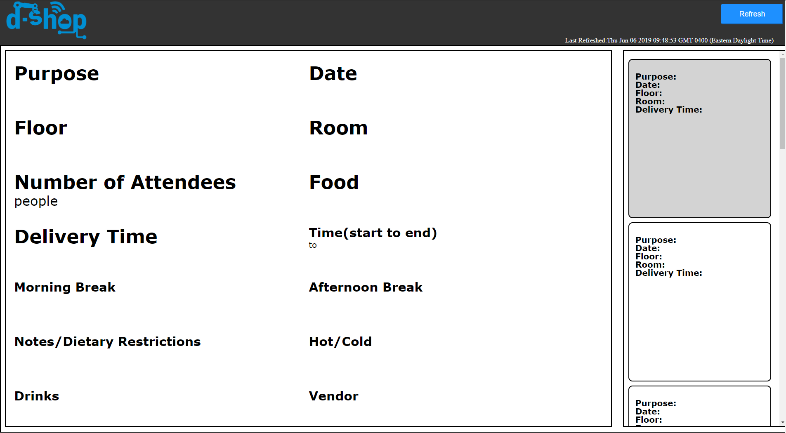

Admin User Guide
1. Enabling the Server "XAMPP"
The Catering App is run on a localserver. To access this server, open the "maybexampp" folder and run "xampp_start.exe". The server automatically starts running. If you would like to check the status of the server, run "xampp_control.exe" and see whether or not the Apache and MySQL are running. If you do not have XAMPP you can download XAMPP from here.
2. Login: Admin
Use the Admin Username and Password that you were provided to login.
3. Features of the App as Admin
Unlike regular users Admin also have the power to add/delete user accounts. As Admin you can change an individual's acessibility to the catering app.
Signing Up Users
Upon Logging in, press Sign Up and enter the desired username and password. Confirm the password by retyping it into the lowest text box and then press signup. Your account is now made!

Deleting Users
In order to delete a user select the ID they are assigned and select "Delete".

Setting Up HTTPS
This is extremely important for the server running to be secure and encrypted so I'm going to be simplifying the steps from these two websites : Lets Encrypt for Windows 10 and Auto Renewal for the ACME certificate.
1. Install Ubuntu on Windows 10 from the Microsoft Store. Click here to open the store!
2. Installing Certbot
Run the following commands in your Bash terminal.
Note — you may need to prefix each command with sudo.
Add the Certbot repository
"add-apt-repository ppa:certbot/certbot"
Update package lists to include our new repository
"apt-get update"
Download & Install Certbot
"apt-get install certbot"
Generate the certificate
"certbot -d secure.mydomain.com --manual --preferred-challenges dns certonly"
Breaking it down
-d — Your domain which is the ip address 10.171.35.55
-manual — Provides manual instructions for obtaining a certificate
-preferred-challenges — Challenge type. In this example, we will be using the DNS challenge, as explained earlier in the article.
We’re asked “Are you OK with your IP being logged?”
Type Y and Enter to continue
Go ahead and create this record in your public DNS zone.
Important — Before pressing enter, you will need to verify the TXT record is valid and reachable. Due to the nature of DNS this can take anywhere from 5 minutes, to an hour.
Validate the record
Run the following from Command Prompt on your Windows device
"NSLookup.exe -q=TXT _acme-challenge.secure.mydomain.com"
Now our record is active, Press Enter
Congratulations, your certificate has been generated!
Certbot will verify your DNS entry and upon success, will provide you with a valid 90-day SSL certificate. Now we have our certificate, we can export it to a format suitable for the web server.
Exporting the certificate
In this example, I will be installing the certificate into an IIS web server, which requires a PFX Certificate. PFX Certificates contain both the public and private key in a single file. We can do this using the OpenSSL package.
Installing OpenSSL
"sudo apt-get install openssl"
Now, with the OpenSSL package installed run the command
Important — Ensure your working directory is:/etc/letsencrypt/live/secure.yourdomain.com
"openssl pkcs12 -export -out /tmp/certificate.pfx -inkey privkey.pem -in cert.pem -certfile chain.pem"
Now we have our PFX certificate at /tmp/certificate.pfx, we can move it somewhere accessible by our Windows device. I made a folder at C:\tmp, where I will copy the certificate to, using the command
cp /tmp/certificate.pfx /mnt/c/tmp
Normal User Guide
1. Getting to the App
3 Possible Methods:
1. Entering the local host (Search "local host" in search engine)
2. cateringsap.com (Type in search engine)
3. Use the specific ip address.
2. Login: User
On the login page, enter the username and password assigned to you by the Admin. Use it access to the normal user account which gives you access to the Catering Form, a record of past Caterings that you can delete or update, and a nice display of current Caterings.

Catering Form
Fill out all the essentials in the form and submit.
Record Of Caterings "Show Table"
Displays all the info you input into the form in a nice table.

Deleting/Changing Records
Feel like you missed something or messed up an order? No worries you can either remove your order or change fields within it.
Display
This is how the Catering Form info is displayed on Screens for staff.

- © 2018 SAP | Design: HTML Design